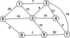
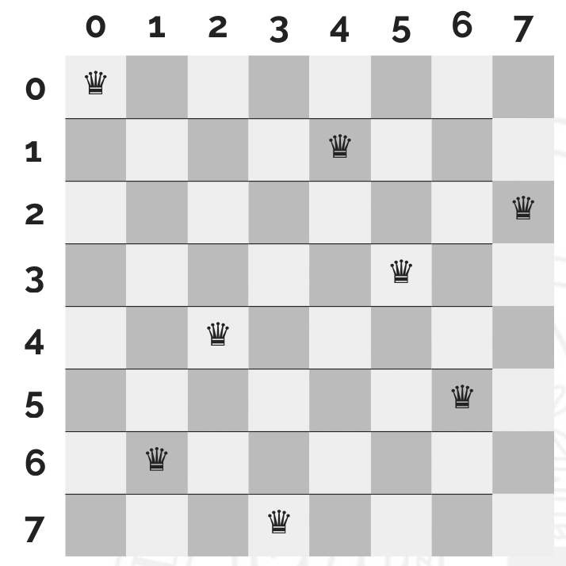
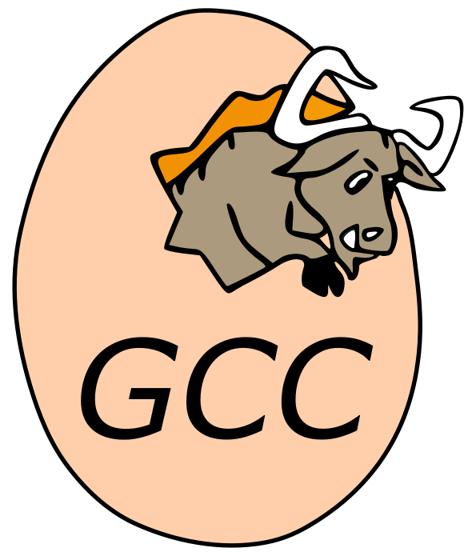
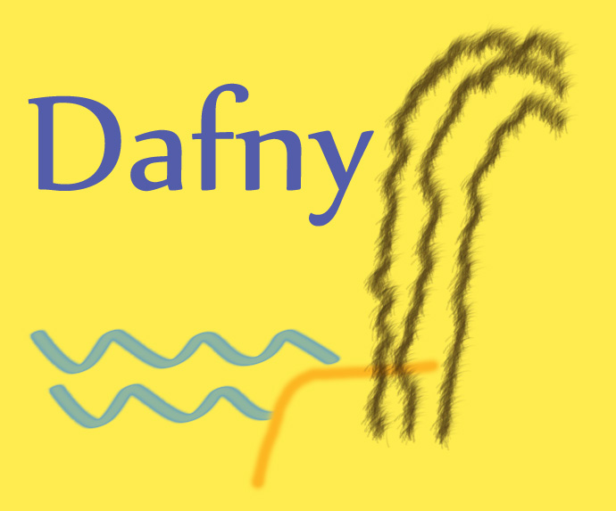
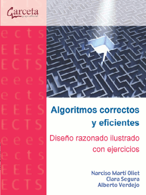
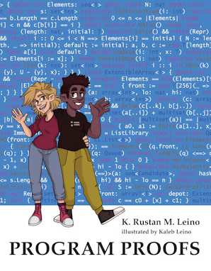
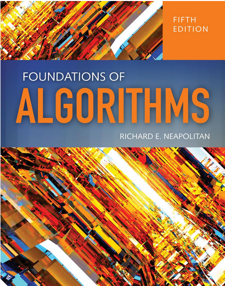
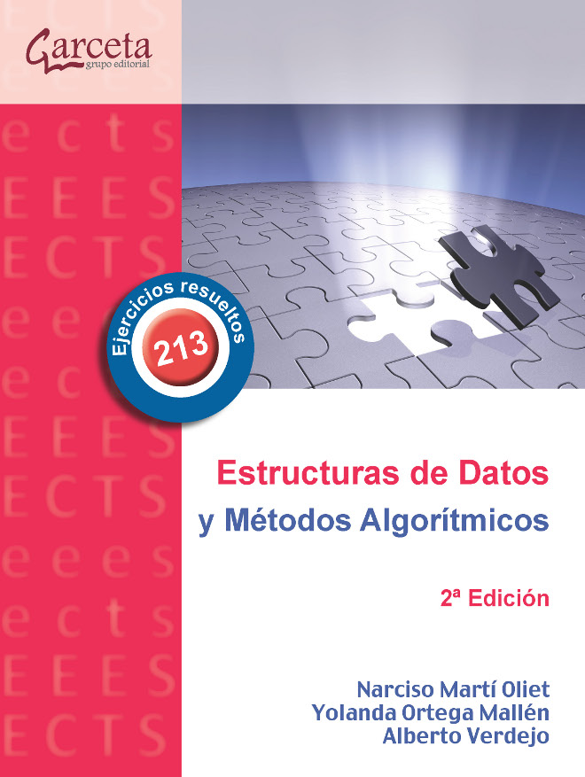
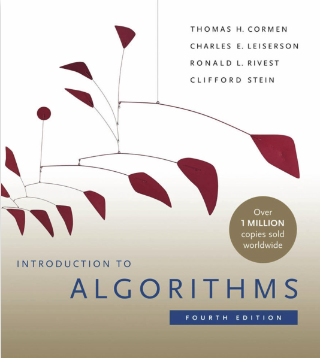
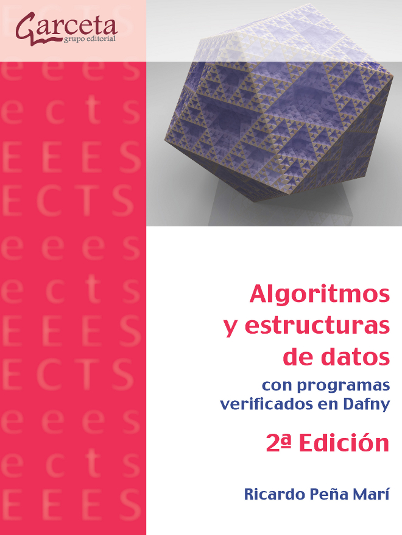

Demostrar formalmente que un algoritmo dado es correcto.
Diseñar algoritmos iterativos y recursivos correctos y eficientes.
Resolver problemas complejos, utilizando las técnicas algorítmicas que veremos durante el curso.
n:def raiz(n):
a = 0
b = n + 1
while b != a + 1:
m = (a + b) // 2
if m * m <= n:
a = m
else:
b = m
return a¿Por qué funciona? ¿Hay algún caso en el que no funcione?
Mediante la verificación de programas es posible demostrar matemáticamente que un algoritmo calcula lo que se espera que calcule.
Supongamos que tenemos personas de \(n\) nacionalidades distintas.
Conocemos la cantidad \(p_i\) de personas de la nacionalidad \(i\)-ésima \((i \in \{1..n\})\).
Queremos formar parejas formadas por integrantes de distinta nacionalidad. ¿Cuántas parejas distintas podemos formar?.
Tenemos \(n\) ciclistas en una prueba contrarreloj.
Cada ciclista toma la salida \(k\) segundos después del anterior.
Sabemos el tiempo que tarda cada ciclista en completar el recorrido.
¿Cuántos adelantamientos se producen durante toda la prueba?
Imagen: www.freepik.es
👉🏻 Divide y vencerás
Tenemos \(n\) objetos distintos.
Cada objeto \(i\) tiene un peso \(p_i\) y un valor \(v_i\).
Tenemos una mochila con una capacidad máxima \(M\) (en peso), de modo que no todos los objetos caben en la mochila.
¿Cuáles de esos objetos metemos en la mochila para maximizar el valor total de los objetos introducidos?
Objetos enteros
Objetos fraccionables
Objetos enteros y varias unidades de cada objeto
👉🏻 Programación dinámica
👉🏻 Método voraz
👉🏻 Ramificación y poda
Tenemos un grafo de estaciones interconectadas.
Sabemos el tiempo que lleva desplazarse desde cada estación a sus estaciones adyacentes.
¿Cuál es el tiempo mínimo necesario para ir desde la estación X hasta la estación Y?

👉🏻 Método voraz (Algoritmo de Dijkstra)
Tenemos un tablero de ajedrez de \(n \times n\) casillas.
Queremos colocar \(n\) reinas en ese tablero.
¿Cómo podemos colocar las reinas de manera que no se ataquen entre ellas?

👉🏻 Vuelta atrás
Especificación y verificación formal de algoritmos (≈ 1.5 semanas)
Diseño de algoritmos iterativos (≈ 1.5 semanas)
Diseño de algoritmos recursivos (≈ 1.5 semanas)
Divide y vencerás (≈ 2 semanas)
Programación dinámica (≈ 2 semanas)
Algoritmos voraces (≈ 2 semanas)
Vuelta atrás (≈ 1 semana)
Ramificación y poda (≈ 1 semana)
Duración: 3 horas.
Tres problemas a realizar en papel.
Cada problema consiste en el diseño de un algoritmo que resuelva un problema dado.
Podéis utilizar C++, Python o pseudocódigo.
No solo se requiere el código, sino explicar cómo se ha llegado a él.
(Lo veremos en detalle a lo largo del curso)
15 % - Tres ejercicios escritos a realizar durante la hora de clase.
Fechas orientativas:
Primer ejercicio: 26 de febrero (Temas 1, 2 y 3)
Segundo ejercicio: 25 de marzo (Temas 4 y 5)
Tercer ejercicio: 30 de abril (Temas 6, 7 y 8)
Puede consister en preguntas teóricas (test) y/o ejercicios prácticos cortos.
10 % - Dos prácticas entregables de laboratorio
Pueden realizarse de manera individual, o por parejas
Dificultad similar a los ejercicios de examen
Plazo de entrega: ≈ 1 semana
El profesor podrá solicitar a los estudiantes que expliquen las prácticas entregadas.
Aquellos/as estudiantes que entreguen prácticas y ejercicios que no son de su autoría, tendrán la calificación de 0 en toda la evaluación continua.
También se considera fraude la entrega de prácticas realizadas con herramientas de IA generativa.
Informática
Lógica Matemática
Estructuras de datos
Compilador g++

Editor de texto: VS Code, Emacs, etc.
Embarcadero Dev-C++
o bien, otros entornos de desarrollo en C++
XCode
o bien, otros entornos de desarrollo en C++
Dafny + Plugin Visual Studio Code

ℹ️ No es obligatorio el uso de Dafny en esta asignatura.
Diapositivas de cada tema
Cuaderno de ejercicios por cada tema
No haremos todos los ejercicios en clase.
Podéis/debéis preguntar dudas al profesor, incluso aunque no los hagamos en clase.
Cuestionarios y ejercicios adicionales (autoevaluación)
Código fuente de los ejemplos
¡Acepta el reto!: https://aceptaelreto.com/
Juez en línea
Problemas de autoevaluación
Compiler Explorer: https://godbolt.org/
Compilador de C++ en línea
Problemas de autoevaluación
Temas 1, 2 y 3: Verificación y derivación de programas correctos
R. Peña
Diseño de programas:
formalismo y abstracción (3ª edición)
Prentice Hall,
2005
N. Martí, C. Segura, A. Verdejo
Algoritmos correctos y eficientes: diseño
razonado ilustrado con ejercicios
Garceta grupo
editorial, 2012
K. R. M. Leino
Program
Proofs
The MIT Press, 2022


Temas 4, 5, 6, 7 y 8: Métodos algorítmicos
R. E. Neapolitan
Foundations
of Algorithms (5º edition)
Jones and Bartlett
Publishers, 2015
N. Martí, Y. Ortega, A. Verdejo
Estructuras de datos y métodos algorítmicos -
213 problemas resueltos
Garceta grupo editorial,
2013
T. H. Cormen, C. E. Leiserson, R. L. Rivest, C. Stein
Introduction to Algorithms (4th
edition)
MIT Press, 2022
R. Peña
Algoritmos y
estructuras de datos (con programas verificados en
Dafny)
Garceta grupo editorial, 2023




Atención de dudas por correo: montenegro@fdi.ucm.es
Tutorías:
Martes 10-13h. Despacho 467 (Facultad de Matemáticas)
Cualquier otro horario: previa petición de hora.
❌ NO preguntar dudas a través de mensajes privados en el CV.